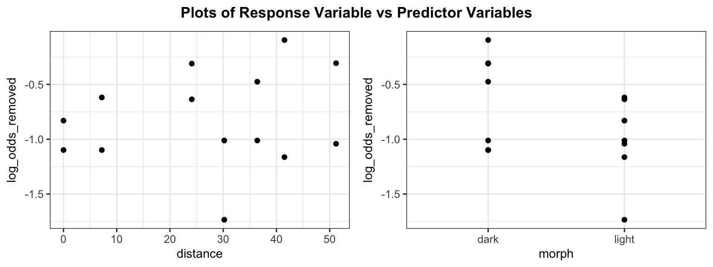
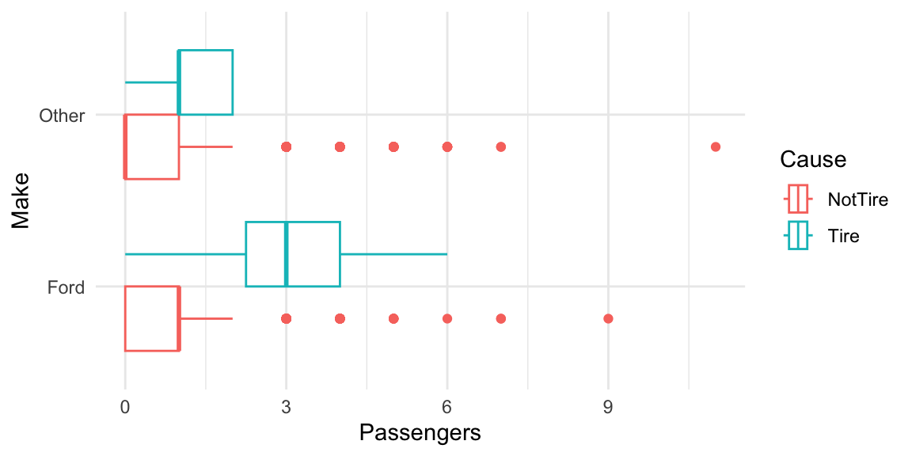

model1 <- lm(log_odds_removed ~ distance + morph + distance * morph, data = moth)Homework 08
Due: Friday of Week 8 at start of class
There is a homework template available if you’d like to use that as a starter file, and copy and paste the code as needed.
ImportantImportant!
Please attempt Case Study problems before class on Friday of Week 8
Problem 5: Cars Inference
Use the problem above for this question.
- Create three three residual plots of the Pearson residuals with a smoother to assess this model:
- residuals vs \(\hat \eta\)
- residuals vs
income - residuals vs
oldest_auto
What do these plots suggest about the adequacy of the logistic regression model?
- Create three binned residual plots to assess this model:
- residuals vs \(\hat \eta\)
- residuals vs
income - residuals vs
oldest_auto
What do these plots suggest about the adequacy of the logistic regression model?
Problem 6: Moths
An article in the Journal of Animal Ecology by Bishop (1972) investigated whether moths provide evidence of “survival of the fittest” with their camouflage traits. Researchers glued equal numbers of light and dark morph moths in lifelike positions on tree trunks at 7 locations from 0 to 51.2 km from Liverpool. They then recorded the numbers of moths removed after 24 hours, presumably by predators. The hypothesis was that, since tree trunks near Liverpool were blackened by pollution, light morph moths would be more likely to be removed near Liverpool. The following variables are used in this analysis:
morph= light or darkdistance= kilometers from Liverpoolplaced= number of moths of a specific morph glued to trees at that locationremoved= number of moths of a specific morph removed after 24 hourslog_odds_removed= log odds of being removed
The model with log_odds_removed as the response and distance, morph, the interaction distance*morph as the predictor variables is shown below.

| term | estimate | std.error | statistic | p.value | conf.low | conf.high |
|---|---|---|---|---|---|---|
| (Intercept) | -1.123 | 0.240 | -4.687 | 0.001 | -1.657 | -0.589 |
| distance | 0.018 | 0.007 | 2.437 | 0.035 | 0.002 | 0.035 |
| morphlight | 0.374 | 0.339 | 1.103 | 0.296 | -0.381 | 1.129 |
| distance:morphlight | -0.028 | 0.011 | -2.612 | 0.026 | -0.051 | -0.004 |
If you examine the R code that I used to fit this model, you’ll see that I used
lm()instead ofglm(). Why is this approach OK in this case?Write out the logistic regression equation (in terms of the log-odds) for light and dark moths (two separate equations)
Use the model to interpret the following in terms of the odds of a moth being removed (you can assume all conditions are satisfactory)
- 95% confidence interval for the coefficient of
distancefor a dark moth - 95% confidence interval for the coefficient of
morphlightgiven the tree is in Liverpool (distance = 0)
Now, report 80% confidence intervals for the same quantities as part (c). (You do not need to re-interpret)
Use the model to calculate the predicted odds of being removed for a light moth that is glued to the trunk of a tree that is 6.2 km from Liverpool.
Calculate the predicted probability that the moth described in the previous question is removed.
Problem 1: Tires
The Ford Explorer is a popular sports utility vehicle made int he US and sold throughout the world. Early in its production, concern arose ove ra potential accident risk associated with tires of the prescribed size when the vehicle was carrying heavy loads, but the risk was thought to be acceptable if a low tire pressure was recommended. The problem was apparently exacerbated by a particular type of Firestone tire that was overly prone to read separation, especially in warm temperatures. This type of tire was a common one used on Explorers in model years 1995 and later. By the end of 1999 more than 30 lawsuits had been filed over accidents that were thought to be associated with this problem. US federal data on fatal car accidents were analyzed at that time, showing that the odds of a fatal accident being associated with tire failure were three times as great for Explorers as for other SUVs. Additional data from 1999 and other variables may be used to further explore the odds ratio.
Load the data with:
tires <- Sleuth3::ex2018[-1,]- The excerpt below is from the Statistical Sleuth. What is the response varibale and what are the predictor variables?
It is of interest to see whether the odds that a fatal accident is tire-related depend on whether the vehicle is a Ford, after accounting for the age of the car and the number of passengers.
- The following is also from the Sleuth textbook. Which predictor and transformation does this suggest using?
Since many car owners replace their tires after the car is 3-5 years old, we may expect the odds of tire failure to increase with age up to a certain point, then perhaps to decrease after that.
- The book also suggests an interaction between vehicle type and number of passengers. Explain why this graph suggests an interaction between vehicle type (make) and number of passengers in the model for odds of tire failure.
gf_boxplot(Make ~ Passengers, col = ~Cause, data = tires)
Fit the logistic regression of the cause of tire failure on age, age\(^2\), the number of passengers, vehicle make, and the interaction of passengers and make. Write down the separate fitted log odds model for Fords and non-Ford vehicles.
What is the effect of vehicle type on the odds of tire failure? Give your answer as an odds ratio formula involving model coefficients and the variable passengers (i.e., the answer is a function of the number of passengers). Clearly state what the odds ratio is measuring (odds of ? for make xxx vs. make yyy)
Compute the odds ratios from part (d) for passenger levels of 0, 1, 2, 3, and 4 passengers. Explain what these odds ratios tell you about tire-related accidents, vehicle type, and number of passengers.
Problem 2: Checking conditions
Use the model you fit in Problem 1.
Create a binned residual plot. Which condition does this address and does it appear to be satisfied?
Create a plot of Pearson residuals against each predictor variable. Which condition does this address and does it appear to be satisfied?
The data consists of fatal accidents reported to the US federal government. Describe a scenario in which this dataset might violate the independence assumption.
Problem 3: budworm
An experiment in the 1980’s looked at the levels of resistance to a certain toxin in the adult Budworm, a type of moth. Batches of 20 moths each of each sex were exposed to different doses of pyrethroid trans-cypermethrin and the number in each batch that were dead or knocked down were recorded (numdead).
You can load the data using the following code:
budworm <- read.csv("https://aluby.github.io/stat230/data/budworm.csv")We are interested in predicting the probability of a moth dying or being knocked down based on the dose and sex. Create an appropriate EDA to investigate this relationship. What do you conclude?
Fit a binomial logistic regression model using
sexanddoseas predictors of the proportion of moths that were dead or knocked down. Report the fitted model equation and the results of the likelihood ratio test against the null model. Be sure to include the test statistic, d.f., and p-value, as well as a conclusion in context.Create a plots of the deviance residuals versus the predictors for the model from part (a). Is there any evidence of non-linearity?
Fit a binomial logistic regression model using
sexandlog2(dose)as predictors of the proportion of moths that were dead or knocked down. (Note:log2()is \(log_2\).) Report the fitted model equation and the results of the likelihood ratio test against the null model. Be sure to include the test statistic, d.f., and p-value, as well as a conclusion in context.Create a plots of the deviance residuals versus the predictors for the model from part (c). Is there any evidence of non-linearity?
Problem 4: Monday
Problem 5 4: Wednesday
An experiment at the Marine/Freshater Biomedical Sciences Center at Oregon State University investigated the carcinogenic effects of aflatoxicol, a metabolite of Aflatoxin B1, which is a toxic by-product produced by a mold that infects cottonseed meal peanuts, and grains. Twenty tanks of rainbow trout embryos were exposed to one of five doses of Aflatoxicol for one hour. The data below represent the numbers of fish in each tank and the numbers of these that had liver tumors after one year :(
Each row in the dataset represents a separate tank of rainbow trout embryos.
trout <- Sleuth3::ex2116Make a plot of the empirical log-odds of cancer vs dose. Comment on what you see
Now make a plot of the empirical log-odds of cancer vs \(1/\sqrt{\text{dose}}\). Comment on what you see
Fit the binomial logistic model for the odds of cancer using \(\frac{1}{\sqrt{\text{dose}}}\) as the sole predictor. (Note: to do this, the predictor in the
glmcommand should be written asI(1/sqrt(Dose))) Plot the Pearson residuals vs \(\frac{1}{\sqrt{\text{dose}}}\). Is there evidence of nonlinearity between the log odds and the predictor variable?Give the dose at which your model estimates 50% chance of getting a tumor (Hint: what log-odds does this correspond to?)
Refit the model in part (c) using the quasibinomial procedure. Give the dispersion parameter estimate. Compare the standard errors from the quasibinomial model to the standard binomial model.
Problem 6 5: Case Study (5 points each)
Summarize the main point of the “circles” visualization in the first APM reports article, then construct your own EDA that shows the same main point.
Verify the findings of the APM methodology report that claims that the predictors in Group B are not significant after accounting for the predictors in Group A in the logistic model for the probability of a juror being struck by the state.
Confirm that your model using predictors in Group A match the coefficients table and the odds ratio table on page 10 of the Methodology report.